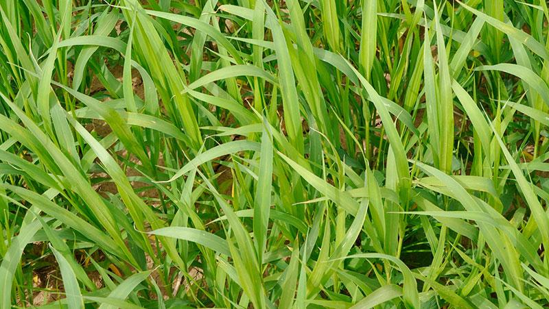
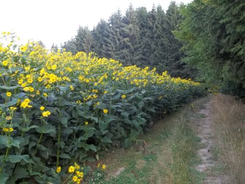
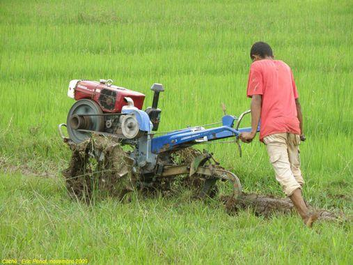
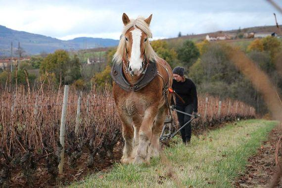

Principe
-
plantations de plantes naturellement résistantes à la sécheresse :
-
plantes du bassin méditerranéen et d’Afrique : céréales, légumineuses et fourragères
-
plantes de couvert intercultures et de lutte contre l’érosion des sols ou ayant une action dépolluante
-
Applications
Recherche & développement pour applications à une agriculture non subventionnée des PVD … ou de tous ceux qui souhaitent retourner à la terre sans se couvrir de dettes …
-
Plantes de couvert
-
moha
Figure 1. aperçu de la moha en plein été, sans arrosage … -
silphie : une plante pérenne utile pour les paysans méthaniseurs ou l’alimentation des bovins, très peu gourmande en eau
Figure 2. aperçu de la silphie avant récolte
-
-
Ateliers de traction légère, adaptables pour des paysans pauvres :
-
gros motoculteurs de 20ch
 -
traction animale

-
-
Machinisme agricole résistant, réparable et abordable, car fabricable localement, sur la base de plans diffusés sur le modèle de l’open source
Principales difficultés
-
terrain d’implantation (cultures de plein air)
-
machines agricoles
-
chevaux de trait
-
ferme expérimentale …